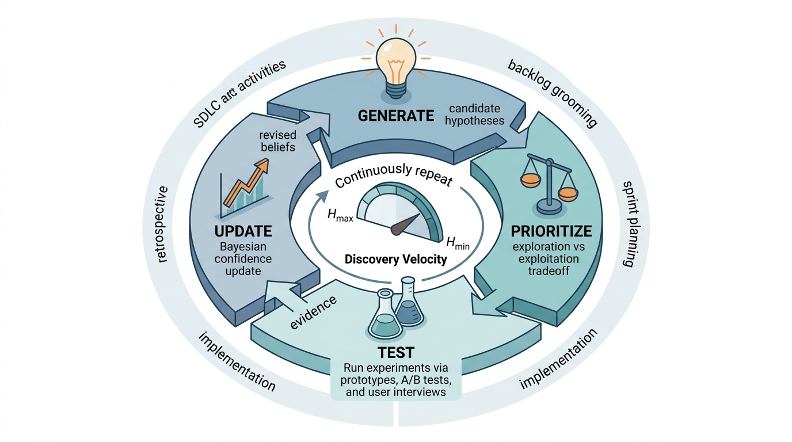

Prerequisites
This section builds directly on the search framework \((S, A, T, f, C)\) introduced in Section 1.1 and the hypothesis testing paradigm from Chapter 2. We also reference the regret analysis from Section 1.2. Familiarity with basic software engineering concepts (requirements, testing, deployment) is assumed; no specific methodology experience is needed.
The traditional view of software development treats it as an engineering discipline: gather requirements, design, implement, test, deploy. This linear model assumes that requirements are knowable in advance and that the primary challenge is faithful translation from specification to code. In practice, many software projects fail not because of poor implementation but because of incorrect assumptions about what to build. This section reframes the software development life cycle (SDLC) as a discovery process where every phase generates and tests hypotheses, where uncertainty is the default state, and where the goal is not to follow a plan but to learn as quickly as possible what the right product is.
1. The Manufacturing Illusion
In 2005, the FBI scrapped the Virtual Case File project after spending over \$170 million, having discovered, years into development, that field agents needed something fundamentally different from what the specification described. Software engineering inherited its vocabulary from manufacturing. We talk about "building" software, "shipping" products, and running a "factory" of sprints. But nobody manufactures software. A developer writes each line of code exactly once (or should). No assembly line produces identical copies. Writing software means discovering what the program should be, one decision at a time.
Consider a concrete example. A team is asked to build a recommendation engine for a scientific paper discovery platform. At the start, they face cascading uncertainties:
- Requirements uncertainty: Do researchers want recommendations based on citation networks, content similarity, reading history, or some combination? How much novelty versus relevance do they prefer?
- Architecture uncertainty: Should the system use collaborative filtering, content-based filtering, a hybrid approach, or a large language model (LLM) for semantic matching?
- Implementation uncertainty: Which embedding model performs best on scientific text? What latency is acceptable? How should the system handle cold-start users, where "cold-start" refers to new users for whom the system has no prior interaction data to draw on?
- Value uncertainty: Will researchers actually use the recommendations? Will recommendations lead to better research outcomes, or just more reading?
Each of these uncertainties is a hypothesis waiting to be tested. The waterfall approach treats them as questions to be answered in sequence before writing code. The discovery approach treats them as experiments to be run as quickly as possible, with code as the experimental apparatus.
2. Formalizing SDLC as Search
When teams skip this formal mapping, they default to intuition about what to build next, and intuition scales poorly: the Standish Group's CHAOS reports consistently find that fewer than 35% of software projects succeed, with "incomplete requirements" and "lack of user involvement" topping every failure list. Making the search structure explicit is what turns those odds around.
The software development process maps directly onto the search framework from Section 1.1. The five-tuple \((S, A, T, f, C)\) for software discovery is:
- \(S\) (State space): the set of all possible software systems the team might build, including requirements documents, architecture diagrams, code, tests, and deployment configurations. Each state \(s \in S\) is a complete snapshot of the project.
- \(A\) (Actions): development activities such as writing a user story, implementing a feature, writing a test, refactoring, deploying to staging, running a user study, or merging a pull request.
- \(T\) (Transition function): \(T(s, a) \to s'\) describes how action \(a\) transforms project state \(s\) into a new state \(s'\). This function is stochastic because the outcome of writing code, running tests, or gathering user feedback is uncertain.
- \(f\) (Objective): a composite function measuring user satisfaction, system reliability, code maintainability, and development cost. In practice, \(f\) is partially observable and changes as the team learns more about what users actually need.
- \(C\) (Constraints): budget, timeline, team size, regulatory requirements, backward compatibility, and technical debt limits.
The key insight is that \(f\) is unknown at the start. The team does not fully know what a good outcome looks like until they have explored enough of the space to understand user needs. This makes software development a problem of search under uncertainty, precisely the setting where exploration strategies from Section 1.2 apply. In short: Software development is not a manufacturing problem with a known blueprint; it is a search problem with an unknown objective.
Every requirement in a software project is a hypothesis of the form: "We believe that [user group] needs [capability] because [reason], and we will know we are right when [measurable outcome]." Treating requirements as hypotheses changes everything about how we prioritize, implement, and validate them. A hypothesis can be tested with a prototype, a mockup, or even a conversation. A "requirement" implies certainty and demands a complete implementation. The hypothesis framing tends to be more honest and more productive.
Mental Model
Mapping software development onto the search tuple \((S, A, T, f, C)\) with an unknown objective \(f\) is like navigating a foreign city without a destination address. You have a map of the streets (the state space \(S\)), you can walk, take a bus, or hail a taxi (actions \(A\)), and each move lands you somewhere new (transition \(T\)). But nobody told you where you are going; you only discover the destination by wandering, talking to locals, and noticing which neighborhoods feel right. Budget and closing times constrain your wandering (\(C\)). The crucial parallel is that you cannot simply plan the shortest route first and then walk it, because the endpoint itself is something you learn through exploration. A detailed street-by-street itinerary written before you start (the waterfall specification) is wasted effort if, three turns in, a local tells you the real landmark is across town.
Common Misconception
A frequent misreading of "requirements are hypotheses" is that hypothesis-driven development means the team should never commit to a direction or that every decision must be validated by a formal experiment before proceeding. This is incorrect: the hypothesis framing does not eliminate commitment, it makes commitment incremental and evidence-based. Teams still make firm decisions and ship features; the difference is that each commitment is sized to match the current level of evidence, starting with cheap tests (mockups, user conversations, spike prototypes) and scaling up investment only as confidence grows.
3. The Four Phases as Hypothesis Operations
Every SDLC methodology, regardless of its specific practices, cycles through four fundamental operations on hypotheses. As Figure 7.1 illustrates, these four operations form a continuous loop, with each cycle's output feeding the next round of generation. We can formalize these using the language of Chapter 2:
Generation: producing candidate hypotheses about what to build and how. In agile, this happens during backlog grooming and sprint planning. In waterfall, it happens during requirements gathering. The quality of generation determines the breadth of the search.
Prioritization: selecting which hypotheses to test next. This is the exploration/exploitation trade-off from Section 1.2. Greedy prioritization (always build the feature with the highest expected value) exploits current knowledge but may miss better options. Exploratory prioritization (build the feature with the highest uncertainty) gathers information but delays value delivery.
Mental Model
Think of prioritization like choosing which dish to order at a new restaurant. The greedy strategy is ordering the most popular item every time: safe, but you may never discover your actual favorite. The exploratory strategy is trying something unfamiliar each visit: you waste a few meals on dishes you dislike, but you eventually find the one you love. The optimal approach (analogous to Upper Confidence Bound (UCB) or Thompson Sampling, where the team samples each feature's value from a probability distribution and picks the highest sample rather than the highest point estimate) orders unfamiliar dishes when you have eaten at the restaurant only a few times and gradually shifts toward your proven favorites as your knowledge of the menu grows. The key parallel is that the cost of a bad order (one disappointing meal) is small compared to the cost of never finding the best dish (a lifetime of "good enough"), just as the cost of one exploratory sprint is small compared to months spent building the wrong feature.
Testing: running experiments to evaluate hypotheses. In software, experiments take many forms: unit tests, integration tests, A/B tests (controlled experiments that split users into groups to compare two variants of a feature), user interviews, prototype demos, canary deployments (where a new release is rolled out to a small subset of production servers before reaching all users), and production monitoring. Each reduces uncertainty about one or more hypotheses.
Updating: revising beliefs and plans based on experimental results. In Bayesian terms, we update our posterior distribution, the revised probability distribution over possible outcomes after observing new evidence, over the space of "good products" given the evidence gathered. In agile, this happens during retrospectives and backlog re-prioritization. Figure 7.1.1 illustrates SDLC hypothesis cycle with discovery velocity feedback loop.

The following formalization captures this cycle. Define a hypothesis \(h_i\) as a tuple \((claim_i, test_i, evidence_i, confidence_i)\) where \(claim_i\) is a falsifiable (that is, stated precisely enough to be proven wrong by a specific observation) statement about what to build, \(test_i\) is a procedure to evaluate the claim, \(evidence_i\) collects observations from running the test, and \(confidence_i \in [0, 1]\) is the team's posterior belief that the claim is correct.
from dataclasses import dataclass, field
from typing import Callable, Optional
import json
from datetime import datetime
@dataclass
class DevHypothesis:
"""A falsifiable hypothesis in a software development process.
Each hypothesis represents an uncertain belief about what to build,
how to build it, or whether it will deliver value. The confidence
field tracks the team's evolving belief as evidence accumulates.
"""
claim: str # Falsifiable statement
category: str # "requirement", "architecture", "implementation", "value"
test_procedure: str # How to test the claim
success_criterion: str # What counts as confirmation
confidence: float = 0.5 # Prior belief, updated with evidence
evidence: list = field(default_factory=list)
status: str = "untested" # "untested", "testing", "confirmed", "refuted"
created_at: str = field(default_factory=lambda: datetime.now().isoformat())
def update_confidence(self, observation: str, confirms: bool,
strength: float = 0.1) -> float:
"""Bayesian-style confidence update given new evidence.
Uses a simplified update rule: confidence moves toward 1.0 if
the observation confirms the hypothesis, toward 0.0 if it refutes.
The strength parameter controls the magnitude of the update.
"""
if confirms:
self.confidence = self.confidence + strength * (1.0 - self.confidence)
else:
self.confidence = self.confidence - strength * self.confidence
self.evidence.append({
"observation": observation,
"confirms": confirms,
"strength": strength,
"timestamp": datetime.now().isoformat(),
"confidence_after": round(self.confidence, 4)
})
# Update status based on accumulated evidence
if self.confidence > 0.9:
self.status = "confirmed"
elif self.confidence < 0.1:
self.status = "refuted"
else:
self.status = "testing"
return self.confidence
def to_user_story(self) -> str:
"""Convert a confirmed requirement hypothesis to a user story."""
if self.category != "requirement":
raise ValueError("Only requirement hypotheses become user stories")
return f"As a user, I want {self.claim} so that {self.success_criterion}"
# Example: hypotheses for a paper recommendation system
hypotheses = [
DevHypothesis(
claim="Researchers prefer citation-based recommendations over content similarity",
category="requirement",
test_procedure="A/B test with 50 users comparing citation-graph vs. embedding similarity",
success_criterion="Citation-based click-through rate (CTR) exceeds content-based CTR by >10%",
confidence=0.6 # Slight prior toward citation-based
),
DevHypothesis(
claim="SPECTER2 embeddings outperform TF-IDF for scientific paper similarity",
category="implementation",
test_procedure="Offline evaluation on RELISH benchmark dataset",
success_criterion="SPECTER2 achieves >0.85 normalized Discounted Cumulative Gain (nDCG) @10 vs TF-IDF baseline",
confidence=0.7 # Strong prior based on published results
),
DevHypothesis(
claim="Users will engage with recommendations if latency is under 200ms",
category="value",
test_procedure="Deploy with latency monitoring and track engagement rate",
success_criterion="Engagement rate >15% when p95 latency < 200ms",
confidence=0.5 # Genuine uncertainty
),
]
# Simulate evidence arriving from experiments
hypotheses[0].update_confidence("Pilot users clicked 2x more on citation recs", True, 0.2)
hypotheses[0].update_confidence("Power users preferred content recs for cross-field", False, 0.15)
for h in hypotheses:
print(f"[{h.status:>10}] {h.confidence:.2f} {h.claim[:60]}...")
Exercise 7.1.1
A team starts with three hypotheses, each at confidence 0.5. During Sprint 1, they test hypothesis A and receive a confirming observation with strength 0.3. During Sprint 2, they test hypothesis B and receive a refuting observation with strength 0.2. Hypothesis C remains untested. Compute the total entropy before any testing and after both sprints. By how many bits did the team's uncertainty decrease? What is their discovery velocity in bits per sprint?
Hint
Binary entropy for a single hypothesis is \(-(c \log_2 c + (1-c) \log_2(1-c))\). At \(c=0.5\) the entropy is 1.0 bit. After a confirming update with strength 0.3, the new confidence is \(0.5 + 0.3 \times (1 - 0.5) = 0.65\). After a refuting update with strength 0.2, the new confidence is \(0.5 - 0.2 \times 0.5 = 0.4\). Compute the binary entropy at each new confidence and sum across all three hypotheses.
4. Discovery Velocity
If software development is discovery, we need a metric for how fast a team is discovering. Lines of code per day and story points per sprint measure output, not learning. A team that ships ten features nobody wants has high output velocity but zero discovery velocity.
We define discovery velocity \(v_d\) as the rate of uncertainty reduction per unit time:
Discovery velocity measures how quickly a team converts unknowns into validated decisions, expressed in bits of resolved uncertainty per unit time. It matters because traditional productivity metrics (lines of code, features shipped) reward output regardless of whether that output addresses the right problem, while discovery velocity directly captures the team's rate of learning. The mechanism is straightforward: each tested hypothesis either confirms or refutes a belief, sharpening the team's probability distribution over possible products and reducing its Shannon entropy, the information-theoretic measure of uncertainty in a probability distribution (Shannon, 1948). Use discovery velocity when the primary risk is building the wrong thing (most new products and features); fall back to throughput metrics only for well-understood maintenance work where requirements are stable and the search space is already narrow.
$$v_d = \frac{\Delta H}{t} = \frac{H(S_{t_0}) - H(S_{t_1})}{t_1 - t_0}$$where \(H(S_t)\) is the entropy of the team's belief distribution over "what is the right product to build" at time \(t\). When \(H\) is high, the team is uncertain; as hypotheses are tested and beliefs sharpen, \(H\) decreases. A team with high discovery velocity resolves uncertainty quickly, converging on the right product faster.
In practice, we approximate \(H\) using the set of active hypotheses:
$$H(S_t) \approx -\sum_{i=1}^{n} \left[ c_i \log_2 c_i + (1 - c_i) \log_2(1 - c_i) \right]$$where \(c_i\) is the confidence in hypothesis \(i\) and \(n\) is the number of active hypotheses. Note that the logarithm is base 2 so that entropy is measured in bits, matching the code in Listing 7.2. Each term reaches its maximum of 1 bit when \(c_i = 0.5\) (maximum uncertainty) and drops to zero when \(c_i\) approaches 0 or 1 (resolved).
import numpy as np
from typing import List
def compute_entropy(hypotheses: List[DevHypothesis]) -> float:
"""Compute the total uncertainty across all active hypotheses.
Uses binary entropy for each hypothesis: maximum at confidence = 0.5,
zero at confidence = 0 or 1. The sum gives total team uncertainty.
"""
total = 0.0
for h in hypotheses:
c = np.clip(h.confidence, 1e-10, 1 - 1e-10) # Avoid log(0)
total += -(c * np.log2(c) + (1 - c) * np.log2(1 - c))
return total
def discovery_velocity(hypotheses: List[DevHypothesis],
entropy_before: float,
time_elapsed_days: float) -> float:
"""Compute discovery velocity as bits of uncertainty resolved per day."""
entropy_after = compute_entropy(hypotheses)
return (entropy_before - entropy_after) / max(time_elapsed_days, 1e-6)
# Measure discovery velocity for our recommendation system team
entropy_t0 = compute_entropy(hypotheses)
print(f"Initial entropy: {entropy_t0:.3f} bits")
# After one sprint (2 weeks), some hypotheses have been tested
hypotheses[1].update_confidence("SPECTER2 nDCG@10 = 0.91 on RELISH", True, 0.25)
hypotheses[2].update_confidence("Prototype p95 latency = 150ms, engagement = 18%", True, 0.3)
entropy_t1 = compute_entropy(hypotheses)
v_d = discovery_velocity(hypotheses, entropy_t0, time_elapsed_days=14)
print(f"Entropy after sprint: {entropy_t1:.3f} bits")
print(f"Discovery velocity: {v_d:.4f} bits/day")
Step-Through: Bayesian Confidence Update
Trace through two rounds of update_confidence for a hypothesis starting at
confidence \(c_0 = 0.5\).
Round 1 (confirming observation, strength 0.2):
\(c_1 = 0.5 + 0.2 \times (1.0 - 0.5) = 0.5 + 0.1 = 0.6\)
Binary entropy: \(-(0.6 \log_2 0.6 + 0.4 \log_2 0.4) = -(0.6 \times {-0.737}) - (0.4 \times {-1.322}) = 0.442 + 0.529 = 0.971\) bits.
Round 2 (refuting observation, strength 0.15):
\(c_2 = 0.6 - 0.15 \times 0.6 = 0.6 - 0.09 = 0.51\)
Binary entropy: \(-(0.51 \log_2 0.51 + 0.49 \log_2 0.49) \approx 0.9997\) bits.
Notice that the refuting evidence pushed confidence back near 0.5, almost restoring maximum uncertainty. Two observations of opposite sign largely cancel, leaving the hypothesis nearly as unresolved as before. This illustrates why consistent evidence in one direction is needed to drive entropy down and why contradictory signals stall discovery velocity.
Spotify's "squad" model (2012 to 2023) was an organizational experiment in maximizing discovery velocity. Each squad owned a hypothesis about user behavior (for example, "users want algorithmically generated playlists based on listening history"). Squads ran independent experiments, measured outcomes, and shared learnings. The organizational structure was itself a parallel search strategy: multiple squads exploring different regions of the product space simultaneously, reducing total entropy faster than a single team working sequentially. When Spotify introduced Discover Weekly in 2015, it was the result of a squad testing the hypothesis that users wanted a weekly personalized playlist. The feature was confirmed through staged rollouts with engagement metrics as the success criterion.
5. The Expected Regret of Greedy Development
Discovery velocity tells us how fast a team is learning, but it does not yet explain what happens when a team skips exploration altogether and bets everything on the first plausible idea.
Why not just build the first idea that seems good? The answer lies in the regret analysis from Section 1.2. Greedy development, where the team commits fully to the highest-expected-value feature without exploring alternatives, incurs expected regret that grows with the uncertainty in the environment.
Define the expected regret of greedy development over \(T\) sprints as:
$$R_{\text{greedy}}(T) = \sum_{t=1}^{T} \left[ f(a^*_t) - f(a_t^{\text{greedy}}) \right]$$where \(a^*_t\) is the optimal action at time \(t\) (knowable only in hindsight) and \(a_t^{\text{greedy}}\) is the action chosen by the greedy strategy. The key result from bandit theory, a branch of decision theory that studies how to allocate a fixed budget of attempts among competing options with unknown payoffs, is that greedy regret grows linearly with \(T\) when the environment is uncertain, while exploratory strategies (UCB, Thompson Sampling) achieve regret that grows only as \(O(\log T)\), scaling logarithmically rather than linearly with the number of rounds (Auer et al., 2002).
Checkpoint
So far: greedy development locks onto the first plausible idea, incurring regret that grows linearly with time, while exploratory strategies (UCB, Thompson Sampling) pay a small upfront cost to survey alternatives and achieve only logarithmic regret, wasting far less effort over a product's lifetime.
import numpy as np
import matplotlib.pyplot as plt
def simulate_dev_strategies(n_sprints: int = 50,
n_features: int = 10,
seed: int = 42) -> dict:
"""Simulate greedy vs. exploratory development over multiple sprints.
Each 'feature' has a true value drawn from a distribution unknown to
the team. The greedy strategy always picks the feature with the highest
estimated value. The exploratory (UCB-style) strategy balances estimated
value with uncertainty, exploring less-known features.
Returns cumulative regret for each strategy.
"""
rng = np.random.default_rng(seed)
# True feature values (unknown to the team)
true_values = rng.beta(2, 5, size=n_features) # Skewed: most features mediocre
true_values[rng.choice(n_features)] = 0.9 # One great feature, hidden
# Team's estimates and observation counts
estimates = np.full(n_features, 0.5) # Uniform prior
counts = np.zeros(n_features)
greedy_regret = []
ucb_regret = []
optimal_value = true_values.max()
greedy_total = 0.0
ucb_total = 0.0
ucb_estimates = estimates.copy()
ucb_counts = np.zeros(n_features)
for t in range(1, n_sprints + 1):
# Greedy: pick the feature with highest current estimate
greedy_choice = np.argmax(estimates)
greedy_reward = true_values[greedy_choice] + rng.normal(0, 0.1)
counts[greedy_choice] += 1
# Update estimate (running average)
estimates[greedy_choice] += (greedy_reward - estimates[greedy_choice]) / counts[greedy_choice]
greedy_total += optimal_value - true_values[greedy_choice]
greedy_regret.append(greedy_total)
# UCB: balance exploitation and exploration
ucb_scores = np.where(
ucb_counts > 0,
ucb_estimates + np.sqrt(2 * np.log(t) / ucb_counts),
float('inf') # Explore untried features first
)
ucb_choice = np.argmax(ucb_scores)
ucb_reward = true_values[ucb_choice] + rng.normal(0, 0.1)
ucb_counts[ucb_choice] += 1
ucb_estimates[ucb_choice] += (ucb_reward - ucb_estimates[ucb_choice]) / ucb_counts[ucb_choice]
ucb_total += optimal_value - true_values[ucb_choice]
ucb_regret.append(ucb_total)
return {
"greedy_regret": greedy_regret,
"ucb_regret": ucb_regret,
"true_values": true_values,
"sprints": list(range(1, n_sprints + 1))
}
results = simulate_dev_strategies()
# The greedy strategy accumulates roughly linear regret,
# while UCB's regret flattens as it discovers the best feature
print(f"Greedy total regret after 50 sprints: {results['greedy_regret'][-1]:.2f}")
print(f"UCB total regret after 50 sprints: {results['ucb_regret'][-1]:.2f}")
print(f"Regret ratio (greedy/UCB): {results['greedy_regret'][-1] / max(results['ucb_regret'][-1], 0.01):.1f}x")
In development teams, greedy regret often compounds through sunk cost reasoning. After investing three sprints in the wrong feature, the team feels committed: "We've already built half of it, we should finish." This is the software equivalent of continuing to dig in the wrong location because you already have a deep hole. The hypothesis-driven approach provides a principled exit criterion: if the hypothesis is refuted, stop building, regardless of how much code you have written. Code is cheap; shipping the wrong product is expensive.
6. SDLC Models as Exploration Strategies
The regret analysis above treats exploration as a single knob to turn up or down, but real development teams encode their exploration choices into a methodology, each with its own feedback rhythm and risk profile.
Different SDLC methodologies correspond to different strategies for navigating the search space. We can characterize each by its exploration/exploitation ratio and the feedback loop length (how quickly hypotheses are tested).
Methodology Profiles
Waterfall is a pure exploitation strategy: commit to a single path through the search space (the specification) and follow it to completion. Feedback arrives only at deployment. In bandit terms, waterfall is equivalent to pulling the same arm for all \(T\) rounds without observing rewards. This works well when uncertainty is very low (the team has built similar systems before) but incurs catastrophic regret when assumptions are wrong.
Agile/Scrum introduces periodic exploration through sprint cycles. Each sprint is a mini-experiment: the team builds a small increment, gathers feedback, and adjusts. The sprint length (typically 1 to 4 weeks) determines the feedback loop latency. Shorter sprints mean faster hypothesis testing, but each individual experiment has less power (less code built, fewer features to evaluate).
Lean Startup pushes exploration further by minimizing the cost of each experiment. The minimum viable product (MVP) is the smallest possible test of the most critical hypothesis. Build-measure-learn cycles can be as short as hours or days. In bandit terms, lean development reduces the cost per arm pull, enabling more exploration within the same budget. Under the parameters in Listing 7.4, a Lean/MVP team can test roughly 60 hypotheses per quarter; a Waterfall team, following the same model, tests fewer than one.
Design Thinking adds a distinct generation phase (ideation) before testing. While agile and lean tend to test hypotheses sequentially, design thinking encourages generating a broad set of candidates before selecting any for implementation. This corresponds to a higher exploration budget in the early phases, trading short-term progress for a better initial survey of the search space.
from dataclasses import dataclass
@dataclass
class SDLCStrategy:
"""Characterize an SDLC methodology as a search strategy."""
name: str
exploration_ratio: float # Fraction of effort spent exploring alternatives
feedback_loop_days: float # Average time to test one hypothesis
cost_per_experiment: float # Relative cost of each experiment (1.0 = full feature)
parallelism: int # Number of hypotheses tested simultaneously
@property
def hypotheses_per_quarter(self) -> float:
"""Estimate how many hypotheses a team can test in 90 days."""
sequential = 90 / self.feedback_loop_days
return sequential * self.parallelism
@property
def regret_profile(self) -> str:
if self.exploration_ratio < 0.1:
return "Linear (high risk of locking onto suboptimal path)"
elif self.exploration_ratio < 0.3:
return "Sublinear (moderate exploration mitigates lock-in)"
else:
return "Logarithmic (broad exploration, slower initial delivery)"
strategies = [
SDLCStrategy("Waterfall", 0.05, 180, 1.0, 1),
SDLCStrategy("Scrum (2-week)", 0.20, 14, 0.3, 1),
SDLCStrategy("Lean/MVP", 0.35, 3, 0.05, 2),
SDLCStrategy("Design Thinking",0.50, 7, 0.1, 3),
]
print(f"{'Strategy':<20} {'Explore%':>8} {'Loop(d)':>8} "
f"{'Hyp/Qtr':>8} {'Regret Profile'}")
print("-" * 85)
for s in strategies:
print(f"{s.name:<20} {s.exploration_ratio:>7.0%} {s.feedback_loop_days:>8.0f} "
f"{s.hypotheses_per_quarter:>8.0f} {s.regret_profile}")
Real-World Application: Amazon's Single-Threaded Leadership
Amazon structures product teams around "single-threaded leaders," each owning one hypothesis about customer needs. When the Kindle team launched in 2007, the core hypothesis was that readers would pay for a dedicated e-ink device if it could deliver any book in under 60 seconds. Rather than building a full tablet, the team tested this narrow claim with a single-purpose device, treating the hardware itself as an MVP. The success criterion (sustained book purchases exceeding physical sales within two years) drove every design trade-off, from removing a color screen to prioritizing cellular connectivity over WiFi.
The hypothesis-driven development (HDD) movement has gained significant traction in industry since 2023. Microsoft's experimentation platform (ExP) runs over 20,000 concurrent A/B tests, treating every feature change as a hypothesis with an explicit success metric (Gupta et al., 2019). Netflix's "scientific approach to content decisions" applies Bayesian updating to programming choices, modeling each show as a hypothesis about audience preferences. Most recently, the integration of LLM-based code generation (Copilot, Cursor, Claude Code) has further reduced the cost of building experimental prototypes, making it feasible to test hypotheses that would previously have been too expensive to implement. A notable 2024 advance is the EDELTA framework (Ye et al., "Automated Hypothesis Testing with Large Language Models," ICSE 2024), which uses LLMs to automatically generate, prioritize, and evaluate development hypotheses from issue trackers and code repositories, closing the loop between hypothesis formulation and empirical validation without manual experiment design. We explore the broader AI acceleration effect in detail in Section 7.2 and throughout Chapter 9: Vibe Coding.
The DevHypothesis class above demonstrates the concept from scratch, but
in practice you do not need to build your own tracking system. GitHub Issues with a
custom "hypothesis" label, structured templates, and project boards provide the same
workflow in roughly 10 lines of configuration versus the 80 lines of Python above.
Create an issue template with fields for Claim, Test Procedure, Success Criterion,
and Confidence; use labels for status (untested, testing, confirmed, refuted); and
use GitHub Projects to visualize the hypothesis portfolio as a Kanban board. The
gh CLI can automate creation and updates. For large-scale experimentation
platforms, tools like LaunchDarkly, Split.io, or Statsig provide built-in hypothesis
management with statistical rigor.
Try It: Track and Visualize Discovery Velocity for a To-Do App
Build a small hypothesis tracker and measure discovery velocity across simulated sprints. You need only Python and matplotlib (or any plotting library).
- Create a JSON file listing five hypotheses for a to-do app (for example: "users want recurring tasks," "drag-and-drop reordering increases engagement," "dark mode reduces evening churn"). Give each hypothesis a claim, test procedure, success criterion, and initial confidence of 0.5.
- Write a Python script that loads the hypotheses, then simulates three two-week sprints. In each sprint, pick one hypothesis at random, generate a synthetic observation (confirm with probability 0.6, refute with probability 0.4), and apply the Bayesian confidence update from Listing 7.1.
- After each sprint, compute the total entropy across all hypotheses using the formula from Listing 7.2. Store the entropy value and the sprint number.
- Plot entropy versus sprint number using matplotlib. Add a horizontal line at the initial entropy so you can see the rate of decrease. Label the plot "Discovery Velocity" and annotate the slope of the curve.
- Experiment with two variants: (a) always test the hypothesis with the highest uncertainty first (max-entropy selection) and (b) always test the same hypothesis repeatedly (greedy selection). Plot all three strategies on one chart and compare their convergence rates.
Lab: Greedy vs. Exploratory Feature Selection
Goal: Observe how different exploration strategies affect cumulative regret
when selecting features to build, replicating the simulation from Listing 7.3 and
extending it with your own twist.
Tools needed: Python 3, NumPy, matplotlib (all in the standard scientific stack).
Procedure (15 to 30 minutes):
- Copy the
simulate_dev_strategiesfunction from Listing 7.3 into a script. Run it and plot the two regret curves (greedy vs. UCB) to confirm the baseline. - Add a Thompson Sampling strategy: for each feature, sample from a Beta distribution parameterized by observed successes and failures, then pick the feature with the highest sample. Track its cumulative regret alongside the other two.
- What to vary: Change
n_featuresfrom 5 to 50, change the true-value distribution from Beta(2, 5) to Beta(1, 1) (uniform), and try seeds 0 through 9. Record how each change affects the sprint at which UCB and Thompson Sampling first beat greedy. - What to observe: At what sprint count does each strategy's regret curve flatten? How does the number of features affect the exploration cost (early regret) of UCB and Thompson Sampling? Is there a setting where greedy actually wins?
Write a one-paragraph summary of which strategy you would recommend for a team with a 20-sprint budget and 15 candidate features, citing your experimental evidence.
Exercises
-
(Conceptual) Take a software project you have worked on (or are currently working on). Identify three hypotheses that the team held implicitly. For each, write the claim, test procedure, and success criterion in the
DevHypothesisformat. Were any of these hypotheses tested before full implementation? What would have changed if they had been? -
(Coding) Extend the
simulate_dev_strategiesfunction to include a Thompson Sampling strategy alongside greedy and UCB. Compare the regret curves of all three over 100 sprints. Which strategy discovers the best feature fastest? At what sprint count does each strategy's regret curve begin to flatten? - (Analysis) Compute the discovery velocity for two hypothetical teams: Team A runs 2-week sprints and resolves one hypothesis per sprint; Team B runs 1-week sprints but resolves only 0.4 hypotheses per sprint (due to lower experiment power). Which team has higher discovery velocity? Under what conditions does Team B's shorter cycle outweigh its lower per-cycle resolution rate?
What's Next
With the SDLC reframed as hypothesis-driven search, Section 7.2: Engineering Discovery and AI examines how AI tools change the economics of this discovery process. When prototype costs drop from days to minutes, the optimal exploration strategy shifts dramatically.
Bibliography
Introduced risk-driven iteration, a precursor to hypothesis-driven development.
The build-measure-learn loop as a systematic approach to validated learning.
Lessons from Microsoft, Google, LinkedIn, and Netflix on running thousands of concurrent A/B experiments.
The UCB1 algorithm and its logarithmic regret bound, foundational to the regret analysis in this section.